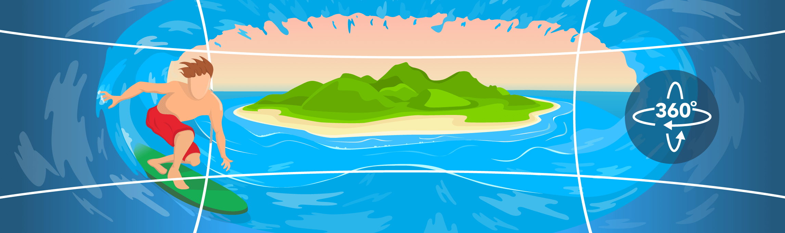

A 360-degree photo is a controllable panoramic image that surrounds the original point from which the shot was taken.
360-degree photos simulate being in the shoes of a photographer and looking around to the left, right, up and down as desired as well as sometimes zooming. The viewer clicks any point on the image to drag it in the desired direction.
The ability to turn around and look at a surrounding environment is achieved through a combination of software and a number of panoramic photos. The photos are lined up to make for a continuous circle around the the point of shooting. A digital camera often has built-in software that helps align the shots. Once enough shots are taken to surround the photographer, the pictures are either uploaded to an application to be turned into a 360-degree photo or created through a mobile app on a smartphone. When uploaded to the Web, they often are played back by software such as Adobe Flash.
360-degree photos are effective for showing off vistas, internal architecture and more in a dramatic fashion that replicates the experience of being there. The ability to create 360-degree photos is increasingly included in digital cameras and smartphones.